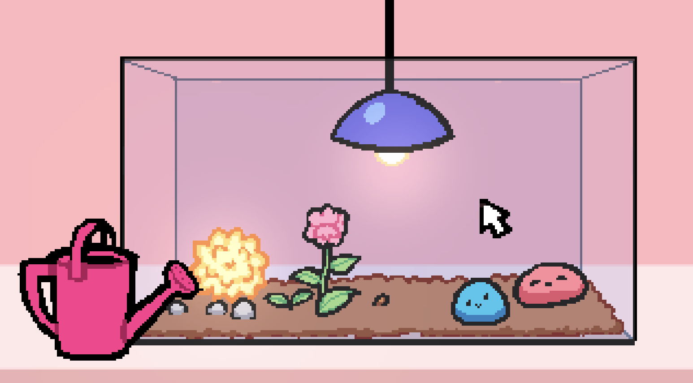
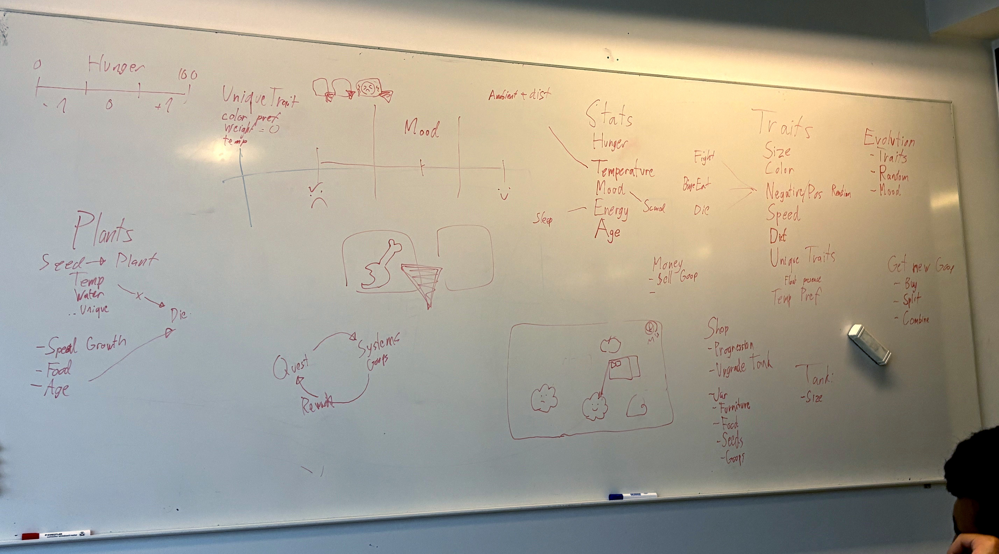
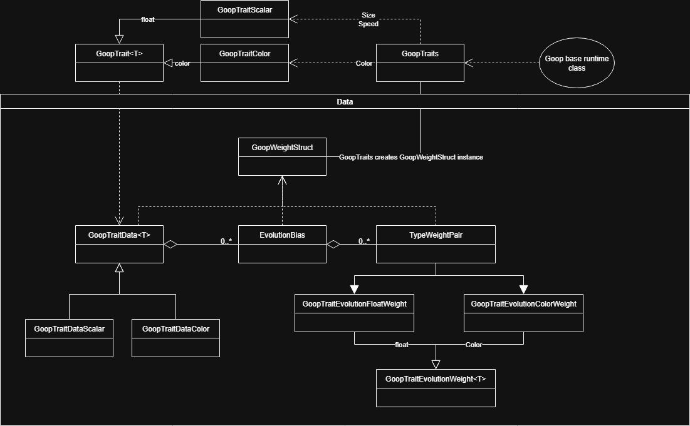
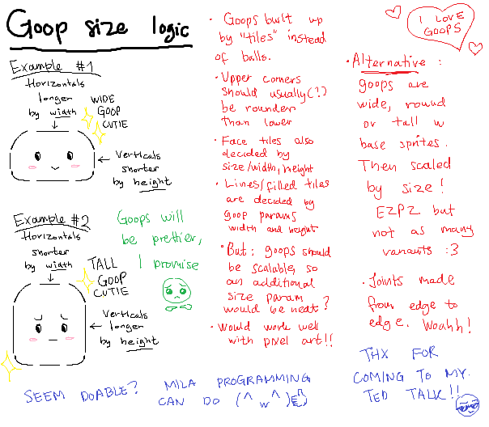
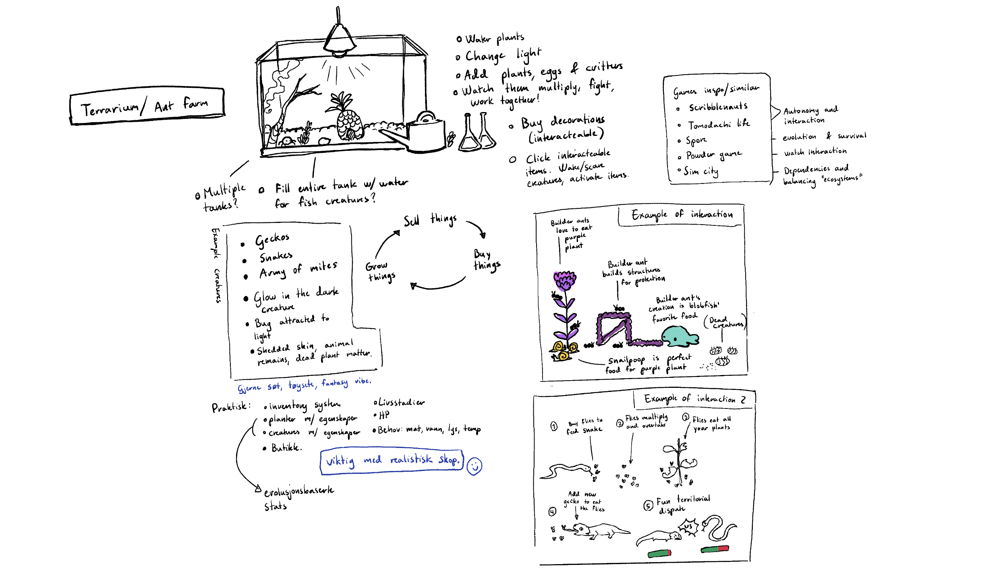
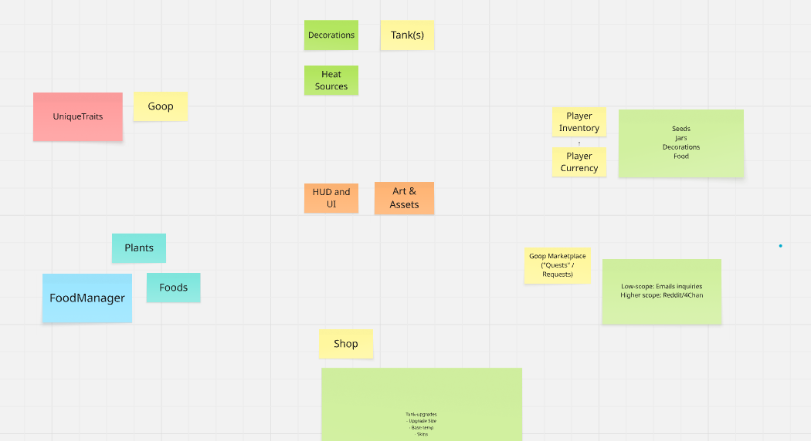
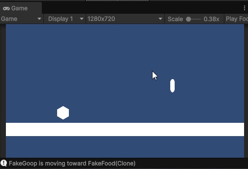
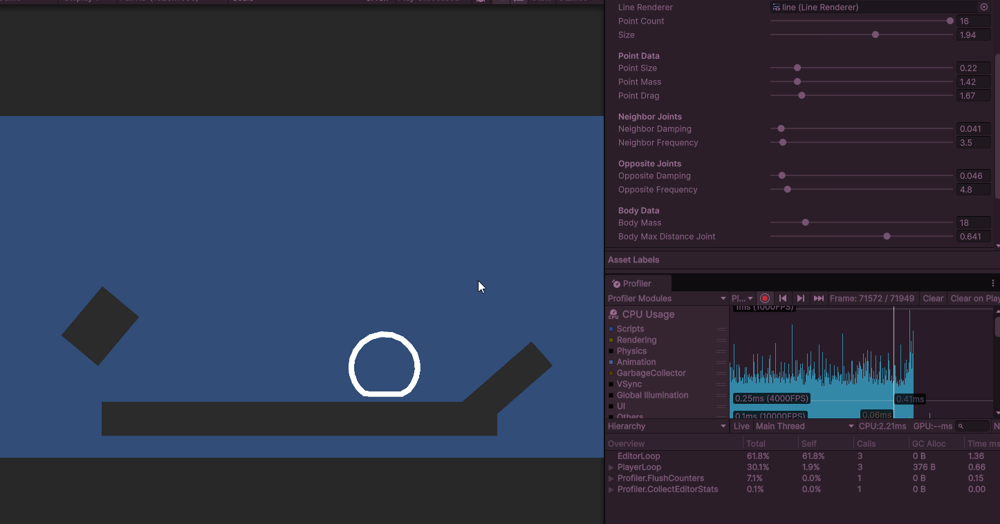
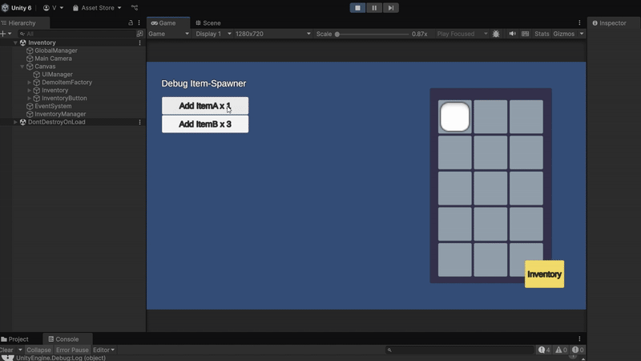

A summer game project for learning Unity and teamwork!
This game project was started for me and a few friends to practice programming and development in Unity.
It was a great opportunity to practice project planning, and programming in a team using version control.
The games concept is a terrarium-like pet-simulator where you watch tiny creatures called "Goops" grow and survive in a tank.
The idea is that each creature evolves based on how the player interacts with the terrarium and the creatures in it - as
well as how these interact with one another.
The game is still early in it's development, and is currently on hold as everyone prioritizes their studies. However, we got quite
far laying the foundation throughout this summer, and are proud of all we accomplished!
Contributors
Simen - Studies Programming and System Architecture at UiO
Mila - Studies Programming and System Architecture at UiO
Lazo - Studies Robotics at UiO
Vibeke - Thats me :D I also study Programming and System Architecture at UiO

Concept art of what the game might look like with a pixel-artstyle
Design and process
The core design idea behind the game was that we wanted to make a game where the game world generates
unique interactions and suprising events on its own.
From June to August 2025, the team held weekly meetings about the design and direction of the project.
It was important for everyone to be on the same page about the idea of project, and up-to-date on the latest changes to the project.
We decided early on to use Unity as our game-engine due to Simen being quite experienced in it, and Git for version control.
We also kept a log of every meeting and the decisions made during them.
Here are some snapshots of our work fleshing out the games concept and design:

A picture of our early design process, as we figured out how the game should function.

The stat, trait and evolution system, designed by Simen.

Concept explanation of the visual growth system, written by Mila.

A presentation of the early concept for the game, made by me :)

An overview of each "component" of the game that needs to be made.
Current Progress
So far into development we have made:
A modular Finite State Machine for easily adding states to the in-game creatures.
A prototype for soft-body physics for the Goop models.
A working inventory system featuring adding, moving, stacking, splitting
deleting items. (I made this part :D)
A system for adding managing stats and traits for each Goop, and changing these through gameplay.
The foundational design for the game flow and necessary components
Lots of cool concept art, ideas and plans for future development!
Here are some of these things in action :D

Testing the state changing based on the appearance of food.

An early version of how the soft-body physics may look in game!
My Main Contribution: Inventory System
For the purpose of our game, which revolves around mouse- and touch controls, we wanted a system where you can
Sort and manage inventory items using drag- and drop.
Drag stored inventory items into the game world, and back into the inventory storage.
Functionality for adding and removing items by other game components (i.e. reward systems or shops).
Due to the drag and drop nature of the inventory, I also wanted the inventory system to feature common
operations for merging items into stacks, splitting stacks, removing items etc.

The inventory system in use, using placeholder items. Circles have a max stack of 22.
I struggled a lot trying to make sure the UI
and Inventory state always match each other, and leaving no room for losing or duplicating items due to errors or mistakes.
However, in the end the inventory turned out just how I wanted it :)
In its current state, the user can:
Click and drag to hold item or item stack.
Right click stack to split in half.
Drop item or stack on empty slot to place.
Drop on existing stack to merge onto stack (if allowed).
Drop item on item of a different type to swap places.
Left click while holding stack to place ONE item into the inventory slot - including occupied once.
The following diagram shows the architecture of the inventory system. To maintain a clean model-view-control
pattern, I made an event-driven system
where the centralized InventoryManager reports any changes to the inventory to the UI, and the UI requests changes to the InventoryManager based on player input.
The held item is stored as a separate entry called "on_hand", where it exists until it is placed or fails
to be placed by the player. As such, adding keyboard only controls to this system shouldn't take too long.
I am quite proud of the inventory system I landed on. It took a lot of trial and error, but it was a very fun exercise in
making a complex, robust system that can interact with both the player and the rest of the gameworld.
Going Forward
As summers can be unpredictable, and university even more so, we have decided to put the project on hold
in order to focus on other things. However, I believe we have made a very solid foundation for future work, with systems
that are scalable and easy to use alongside other systems.
While the future of the project is therefore unknown, I am nonetheless grateful for all the effort we
put into the projects, and all the lessons of teamwork and project management I've picked up along the way.